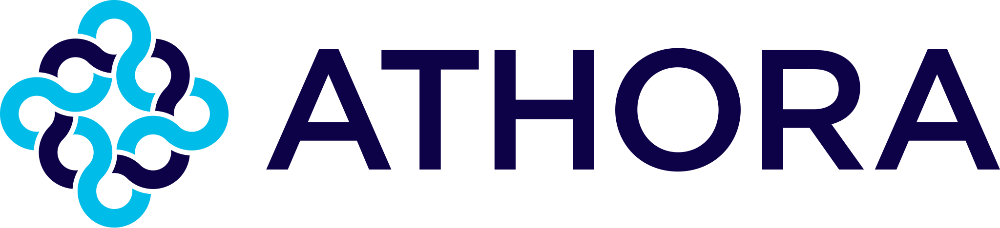
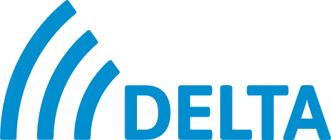
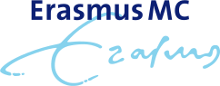
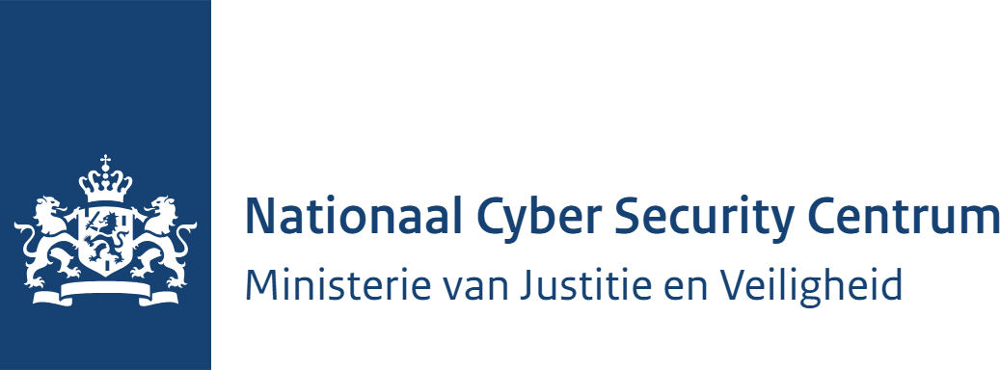
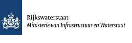
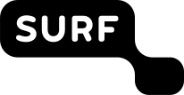
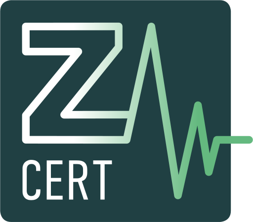

o-IRT-o charter
Het charter fungeert als huishoudelijk reglement voor het o-IRT-o.
Het o-IRT-o is het platform voor de actieve CSIRT-community in Nederland. Wij zijn incident responders uit alle sectoren die kennis, ervaring en vertrouwen met elkaar delen.
Het “operationeel Incident Response Team overleg” (o-IRT-o) heeft tot doel een platform te zijn voor de actieve CSIRT-community in Nederland. Zo brengen en houden we Incident Response op een hoger niveau: door informatie te delen, gebruik te maken van elkaars kennis en expertise, en af te stemmen over zaken die organisatie-overstijgend zijn.
Deelname is veelal gekoppeld aan de organisatie waar iemand een Incident Response (CSIRT)-rol vervult, of aan (bewezen) expertise. Uiteindelijk is het lidmaatschap echter op persoonlijke titel. Dit is noodzakelijk om de onafhankelijkheid en het vertrouwen van en binnen het o-IRT-o te waarborgen.
Diepgaande, actuele kennis van incident response, gedeeld tussen vakgenoten.
Lessen uit de praktijk van CSIRT's in publieke en private sectoren.
Een vertrouwd netwerk waarop je kunt terugvallen als het ertoe doet.
Documenten die de afspraken binnen het o-IRT-o vastleggen.
Het charter fungeert als huishoudelijk reglement voor het o-IRT-o.
Template voor de persoonlijke geheimhoudingsverklaring die iedere deelnemer ondertekent.
We verdedigen al 20 jaar het internet, maar hebben nu pas een website. ;)
Het Operationeel Incident Response Team Overleg heeft deelnemers uit de onderstaande organisaties. Links openen de website van de betreffende organisatie.

Athora Netherlands
Delta
Erasmus MC
NCSC
Rijkswaterstaat
SURFcert
Z-CERTVragen over het o-IRT-o of interesse om deel te nemen? Neem contact met ons op via info@o-irt-o.nl.
Wil je aansluiten? Bekijk eerst de aansluitprocedure.